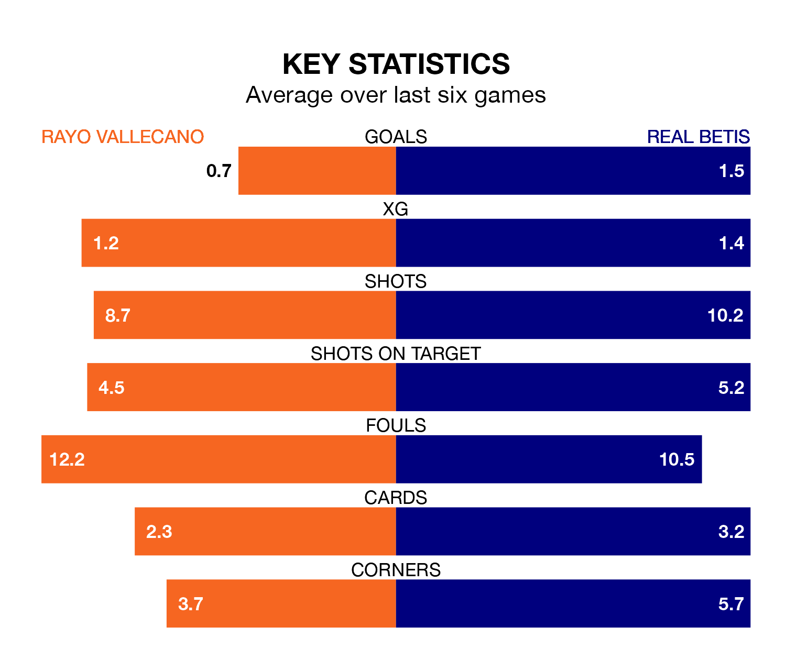

Rayo Vallecano are on a terrible run ahead of hosting Real Betis at Estadio de Vallecas on Sunday, with just two points collected from their last six games.
Rayo have picked up two draws and four losses in their last six La Liga games, and face a Betis side whose last six games have brought two wins and two draws.
In the last 10 years, Rayo and Betis have played each other on 13 occasions. Rayo won one of them, Betis seven, and they drew five times.
On average, Rayo scored 1.2 goals and Betis 1.8 in those matches.
Their last meeting was on September 2, when Betis won 1-0 at home.
With Stole Dimitrievski between the sticks, Rayo can rely on one of the league's safest pair of hands. He has kept nine clean sheets in his 28 appearances this season in La Liga.
In Betis's net, Rui Silva has eight clean sheets in 19 games.
The home team are 16th in the table after 28 games, of which they have won five and drawn 11, earning 26 points.
The visitors are nine places ahead of Rayo in seventh, with 10 wins and 12 draws putting them on 42 points.
With 23 goals in 28 games so far this season, Rayo are the league's second-lowest scorers with 0.8 goals per game. And they are conceding more than average, letting in 38 goals at a rate of 1.4 per game.
Betis are also below average scorers, with 1.2 goals per game, compared to a league average of 1.3. They have conceded 1.1 goals per game.
Rayo's last match was on March 10, a 1-0 loss against Deportivo Alavés.
Betis lost 3-2 against Villarreal last time out, also on Sunday, with Guido Rodríguez and Willian José on the scoresheet.
Sunday's match will be refereed by Juan Luis Pulido Santana, who has taken charge of 15 La Liga games so far this season, issuing three red cards and booking 85 players. He has awarded 12 penalties.
The last Betis game Pulido Santana refereed was the 1-1 draw at home against Getafe CF on February 4. He is yet to oversee a match featuring Rayo this season.
Updated: 15:10 (UTC), 15/03/24